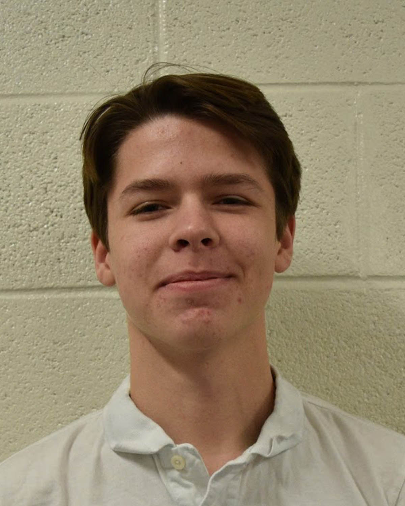
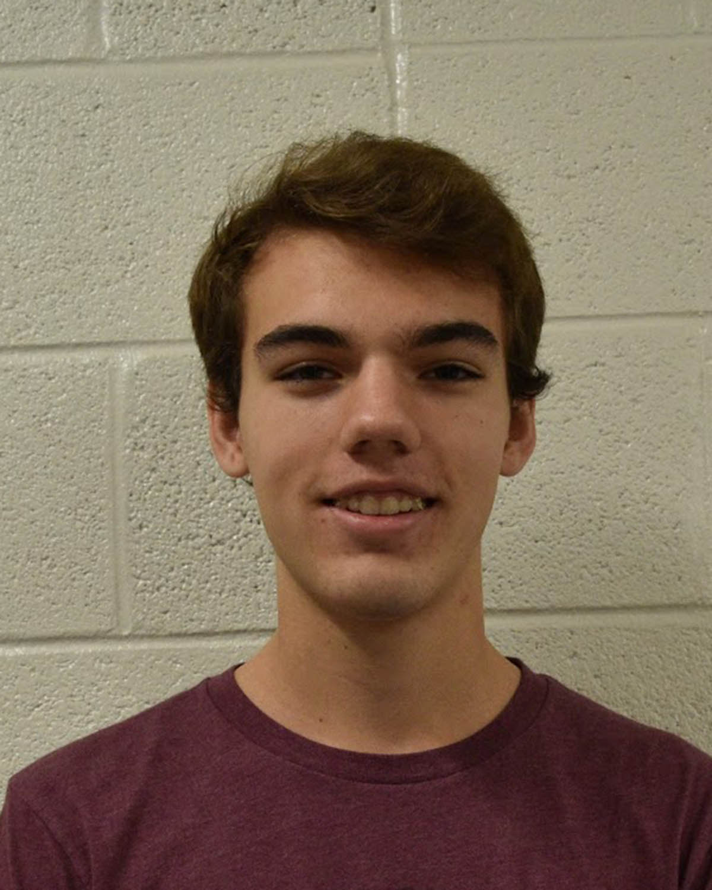
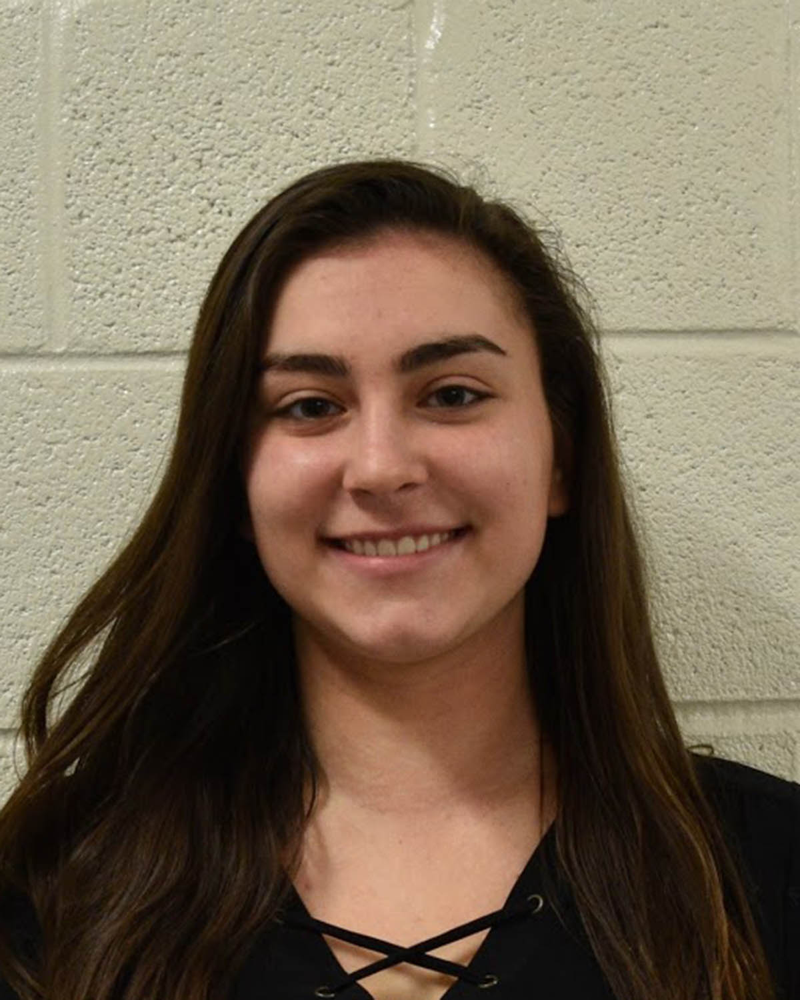
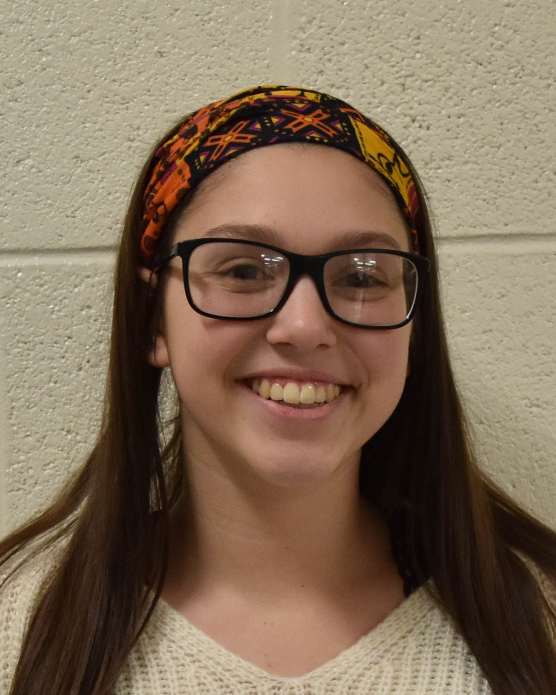
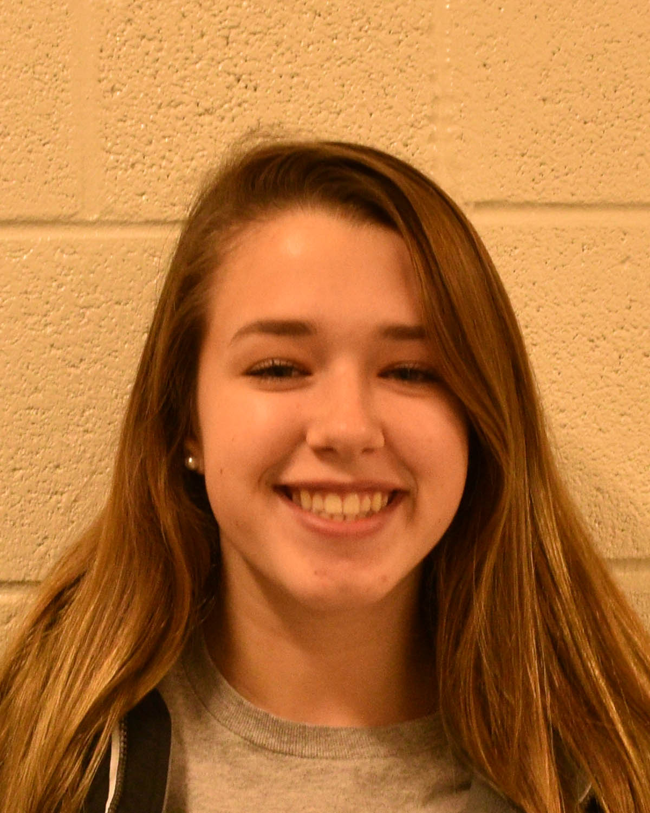
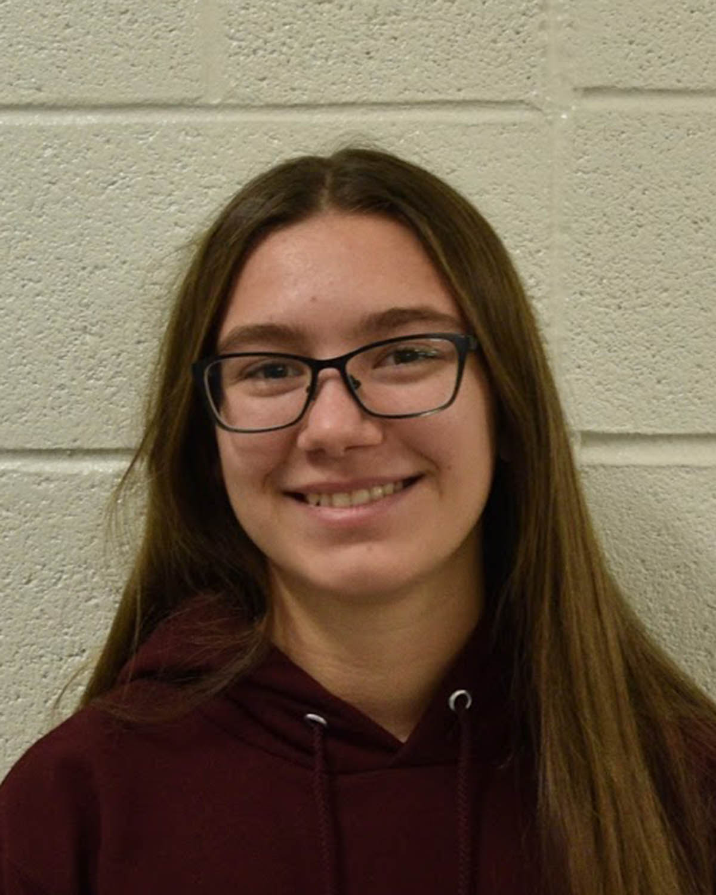
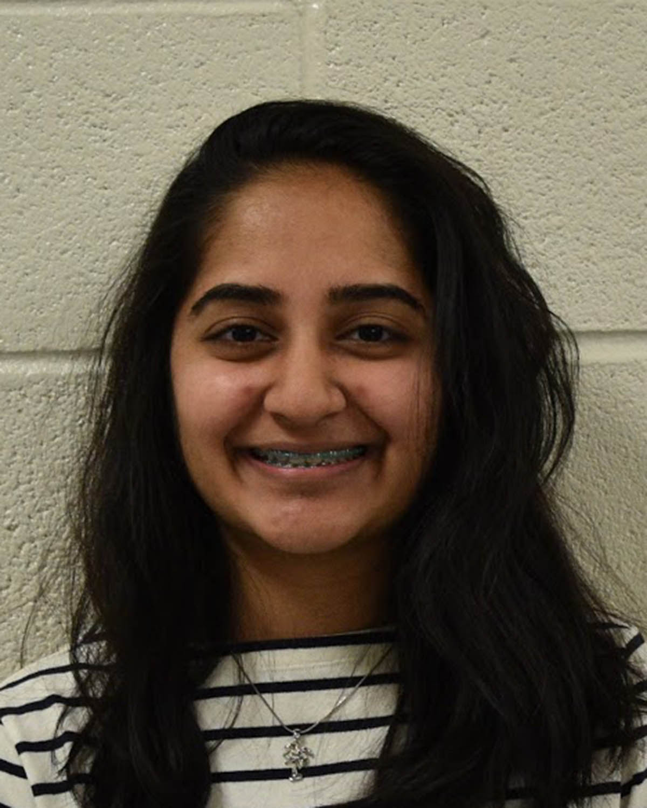
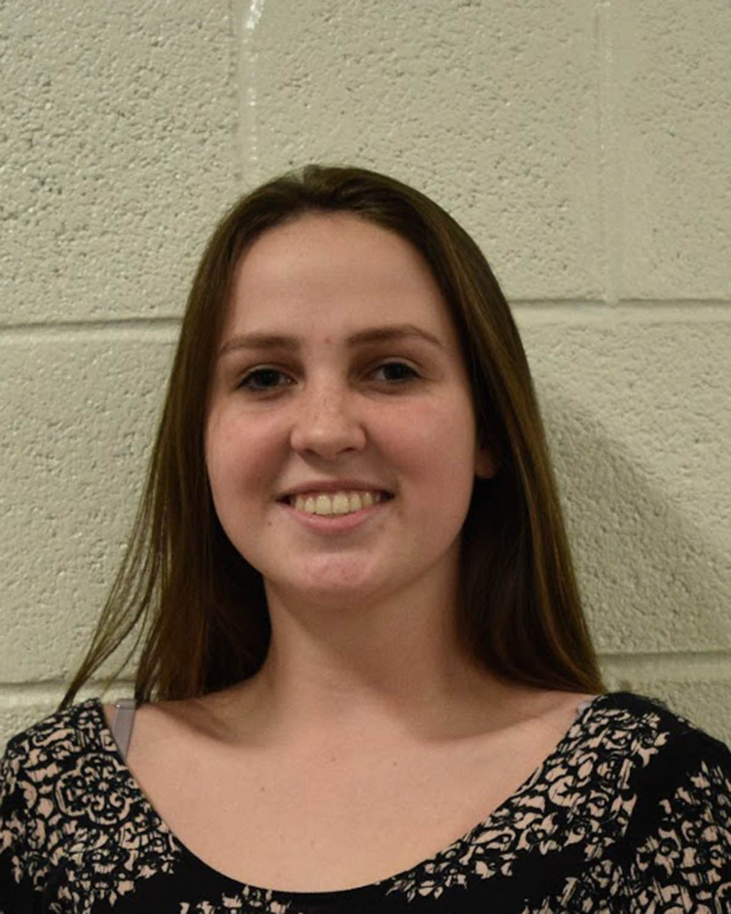
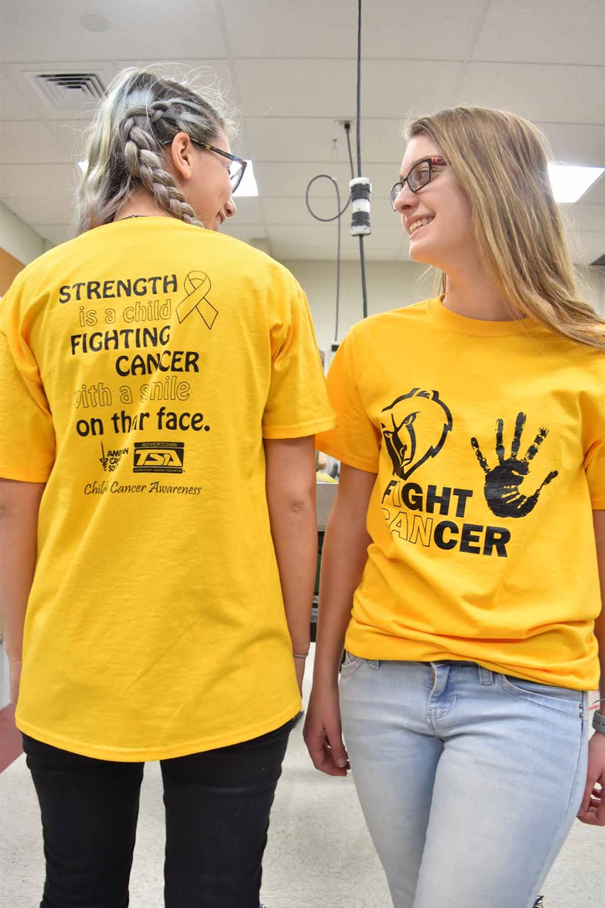

|
 | .jpg) |
|  |  |  |
|  |  |  |
|  |  |
Teachers
Keneth Burton
kburton@boyertownasd.org
Kenneth Burton attended Rochester Institute of Technology for his master’s degree in Woodworking and Furniture Design. He has also attended Millersville University for his master in Technology Education. Burton has worked as a teacher for 24 years and has enjoyed working for 21 years in Boyertown. When he asked why he decided on a career in technology he simply responded with, “Because it is fun!”. From his special skills with woodworking and a constant interest in the growing technological age it was a no-brainer for him. Mr. Burton enjoys working with people and believed teaching was a perfect career for him to share his knowledge with young students and share his passion to the world.
Joshua Pennington
jpennington@boyertwonasd.org
Joshua Pennington attended college at California University of Pennsylvania where he received a master’s degree in Technology Education for grades K-12 and a minor in Graphic communications. He then went on to receive a master’s degree at Wilkes University in Instructional Technology. Mr.Pennington has been teaching for a total of twelve years and an amazing nine years with Boyertown Senior High. “It started back in 9th grade”, he recalled, “where I enjoyed working in the graphic lab in school where they often printed booklets and shirts for school activities.” In fact, Mr.Pennington enjoyed this so much his teacher advised him to go to college and pursue graphic design as a career. He also found a hidden talent for giving instructions and demonstrating. Pennington believes that by becoming a teacher he could portray his love of graphic design to young minds and inspire students to do what they love.
Chad Roth
croth@boyertownasd.org
Chad Roth received his master in Technology Education at Millersville University and has been teaching for all of his seventeen years at Boyertown Senior High. Mr.Roth recognized his passion for technology since a young age. When asked why he choose a career in technology he simply said “My love for engineering and technology is in my blood”. He lives by the motto “If you love your work, you will never have to work a day in your life.” A motto he proudly to lives by everyday as a teacher. Roth explained that he loves all of his students and is overjoyed to be sharing his passion for technology.
Andrew Schopf

aschopf.boyertownasd.org
Mr. Andrew Schoph is a graduate of Millersville University with a bachelors in Technology Education. He then continued on to Wilkes University to receive his masters degree. Andrew Schoph is a new edition to the Boyertown Senior High tech-ed department teaching the new incoming ninth graders, although he has taught at the Junior High. He credits his passion for technology from his teacher in school by making the classes interesting and exciting to learn. Schopf knew straight away when his passion grew that teaching was the best fit. The alternative would be engineering in a small office cubicle for several decades. This was not the future that Schopf desired with his spirited personality. The advice that Mr.Schoph emphasises to all of his students is, “Once the job is first begun, never leave it until it is done. Be the effort great or small, do it well or not at all.”
Jason Valick
jvalik@boyertownasd.org
Jason Valick attended the Pennsylvania College of Technology for his Certification in Carpentry. Valick received his bachelor's degree in Technology Education and a minor in Occupational Safety. He later attended Ball University for his masters in Technology Education. Jason Valick has been teaching technology classes for a total of 24 years and for 23 years at Boyertown Senior High School. Mr. Valik found very early in his life, his niche for carpentry. Throughout his high school and college years he was able to work on his craft. Carpentry was such a major part in his life and decided to pursue a career in the field. It was not a until he worked in construction for many years that an older fellow employee asked him a thought provoking question, “Is this really what you want to do for the rest of your life?”. Valick had the sudden realization of his desire to become a teacher a share his with passion with others and help inspire the young minds of students, just as many teachers had inspired him.
Chapter Activites
Homecoming Carnival
The Boyertown TSA Chapter believes in playing in active role in the community by demonstrating the values and high expectations we hold. One event that Boyertown participate is the Homecoming Carnival, collaborated with the student council to promote to the Homecoming Football Game and dance. This year the Boyertown Chapter ran a concession stand, providing food and refreshments for the event, along with a game “Doctor Pop-a-Glove”, where participants attempted to pop rubber gloves with darts for a prize. The new Freshman Chapter also ran a game where participants threw footballs threw board cutouts of varying size circles, squares, and triangles. All proceed go toward the student’s state conference.
TSA Spaghetti Dinner
This year boyertown hosted its 4th annual TSA Spaghetti Dinner. This event is scheduled before the Orchestra and Chorus concert to replicate a “dinner and a show” to encourage the community to support the TSA chapter. The event is completely student run, with students cooking the food and desserts, dishing out to customers, and cleaning tables and dishes. Everyone in the chapter becomes involved in the event to have a successful night. We are proud to announce that this season, the Boyertown Chapter raised 4,900 to member’s expense toward the state conference.
Relay For Life
Last year was Boyertown first year participating in Relay for Life. On April 7, fifteen members from our chapter volunteered to traveled down to Moravian College. We brought footballs and other sports items to throw around during the walk to other members. By participating in Relay for Life we set an example for other TSA chapters by encouraging support for the efforts of American Cancer Society. This act also demonstrated to our community what the Boyertown TSA chapter represents and supports.
Clothing Drive
Boyertown has participated in its second annual Clothing Drive. People throughout the Boyertown community donated old clothes, jackets, shoes, hats, gloves, scarves, purses, and stuffed animals. The school and community came together to donate a massive amount of items for the drive. We kept the donated items in a large storage room but the items piled up so high it almost out grew the storage room. All profits made from the donation benefit the students traveling to the National Conference in Florida
 Bag Bingo
Bag Bingo
Last year a member of TSA organization a TSA fundraiser known as Bag Bingo. We were able to work with a vendor to book a venue, run bingo, and sell food and refreshments. Students each sold at least one ticket for the bingo night with prizes of expensive purses. The students also ran the kitchen and raffle tickets for door prizes. The event was as huge success and all the tickets were sold out. All the proceeds made from tickets, concessions, and raffle prizes went toward the members expenses for the TSA State Conference.
Techfest
Boyertown hosts an annual Techfest were students from K-9 showcase their science projects and discoveries. Different staff or administration from the district come and judge to students’ projects for the cash grand prize. Techfest brings the community together and reward students for their hard work and achievements. Our chapter recognizes the importance of encouraging the younger generation to pursue a passion in STEM and therefore we play a major role in organizing, setting up, and assisting the judges.TSA student participate in many ways for this event. TSA was represented at several of the different sessions including an exhibit on Engineering Design, and an exhibit on VEX Robotics. This collaboration shows how Boyertown and the Technology and Engineering Department has help prepare them for a future in science and Technology careers.

Yellow Out
Boyertown is strongly dedicated to raising money for the American Cancer Society (ACS). Our largest event event to aid this cause is the “Yellow Out”. TSA members design, print and distribute yellow t shirts throughout the elementary schools to the high school to unite and raise awareness about childhood cancer. Each shirt is sold at 10 dollars and are worn at the “Yellow Out” pep rally in the Senior High gym. Last year the Boyertown Chapter raised $4483 from the shirts, which makes a grand total of $8,853 raised for ACS.
Boyertown Park Bridge
The Boyertown Chapter has decided to work with Boyertown Community Park, Boyertown Rotary club, as well as Borough of Boyertown to complete a major community service project.In 2017 TSA students made a commitment to put together a bridge for the Boyertown Park and the unique Disc Golf Course as one of its major attractions. The entire project is student run where students created multiple designs that were voted on by the Rotary Club. The wood-working students are looking forward to begin creating the bridge during this season for its completion at the end of the year.All the contributing students will be commemorated with their names on an engraved plaque.
Awards
The Boyertown Chapter has grown into a well respected chapter in the TSA community. We have had several students hold officer positions on the Pennsylvania officer team. In 2014, student Morgan Lepre was the State reporter as well as Pennsylvania President Oliva Crocker in the following year. Currently, Abigail Reigner holds the position of Treasurer on the officer team. In addition to officer positions, the Boyertown Chapter has received awards recognizing the amount fundraised for the American Cancer Society. The Boyertown Chapter has received the Purple Award for the past two years. This award is given to chapters who have raised above $ 2,000 during the year. The Boyertown Chapter considers this a great honor to be one of the few chapters to be recognized for this great achievement. The Inspiration Award was also awarded to this chapter at the regional and state level. This coveted award recognizes chapters who exemplify TSA ideals of becoming a large role in the community through their service projects and activities. Last year during the Pennsylvania State Conference, boyertown student William Sheeler was awarded Outstanding Technology Student, demonstrating noteworthy achievements and leadership in TSA. Along with the award he received a $1,500 scholarship that he plans on utilizing toward his college education. The Boyertown Chapter not only strives for excellence during competitions but as well as in the community sharing what the Technology Student Association stands for and the leaders we strive to become.